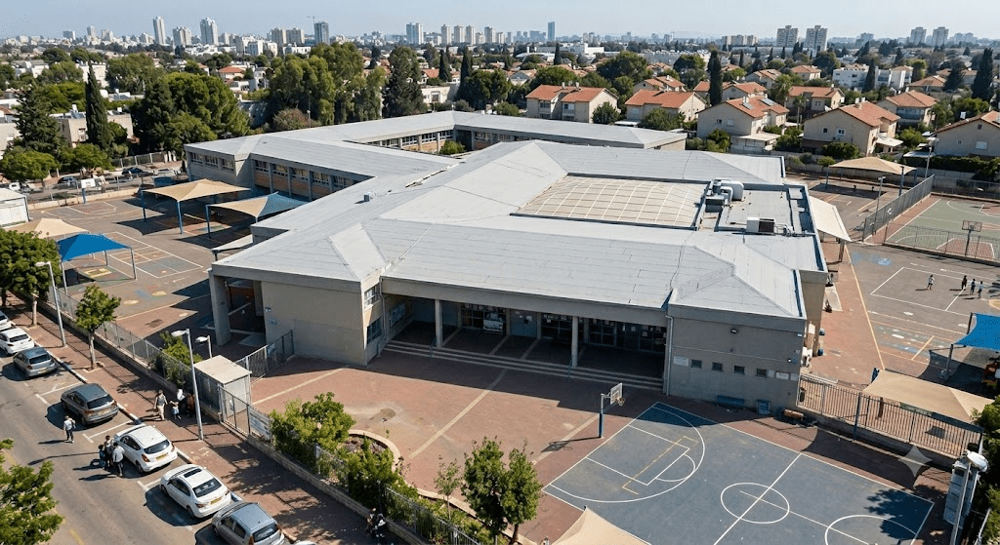

كل الاحترام!
إذا لم تتمكّنوا من الإجابة بشكل صحيح عن بعض الأسئلة،
فمن المهم أن تفهموا ما لا يزال غير واضح وأن تتوجهوا إلى الدردشة أو إلى المعلّم للحصول على شرح إضافي.
والآن يأتي السؤال الأكبر
فيها 4 بنود. عليكم النجاح في 3 منها على الأقل.
يقترح تركيب طبقة تغطية على أسطح المدارس في المدينة تقلّل ارتفاع الحرارة، وتكون مقاومة للمطر، ولا تنكسر أو تتفتت بسهولة.
فحص مهندس البلدية ثلاث مواد محتملة للتغطية، ونظّم المعلومات في جدول.
أ. ما المادة المناسبة لمنع ارتفاع حرارة السطح؟
| مادة | لون / انعكاس الضوء |
الموصلية الحرارية | مقاومة الماء | قابلية الكسر |
|---|---|---|---|---|
| طبقة بلاستيكية بيضاء | فاتح / عالية | منخفضة | عالية | منخفضة |
| لوح معدني داكن | داكن / منخفضة | عالية | عالية | منخفضة |
| لوح زجاجي شفاف | شفاف / متوسطة | متوسطة | عالية | عالية |
ب. أكملوا الجمل بمساعدة مخزن الكلمات:

يقترح تركيب طبقة تغطية على أسطح المدارس في المدينة تقلّل ارتفاع الحرارة، وتكون مقاومة للمطر، ولا تنكسر أو تتفتت بسهولة.
ادّعى يوني: "من المفضل اختيار لوح معدني داكن للسطح، لأنه مقاوم للماء ولا ينكسر بسهولة".
ج. ما الصحيح قوله عن ادّعائه؟
| مادة | لون / انعكاس الضوء |
الموصلية الحرارية | مقاومة الماء | قابلية الكسر |
|---|---|---|---|---|
| طبقة بلاستيكية بيضاء | فاتح / عالية | منخفضة | عالية | منخفضة |
| لوح معدني داكن | داكن / منخفضة | عالية | عالية | منخفضة |
| لوح زجاجي شفاف | شفاف / متوسطة | متوسطة | عالية | عالية |
يقترح تركيب طبقة تغطية على أسطح المدارس في المدينة تقلّل ارتفاع الحرارة، وتكون مقاومة للمطر، ولا تنكسر أو تتفتت بسهولة.
د. اختاروا المادة الأنسب لتغطية السطح، وأكملوا ادّعاءً علميًا يستند إلى المعطيات:
المادة المناسبة لتغطية السطح هي - .
لأن هذه المادة، وفقًا للمعطيات، (موصلية حرارية منخفضة وانعكاس ضوء عال)، (مقاومة عالية للماء) و- (قابلية كسر منخفضة).
| مادة | لون / انعكاس الضوء |
الموصلية الحرارية | مقاومة الماء | قابلية الكسر |
|---|---|---|---|---|
| طبقة بلاستيكية بيضاء | فاتح / عالية | منخفضة | عالية | منخفضة |
| لوح معدني داكن | داكن / منخفضة | عالية | عالية | منخفضة |
| لوح زجاجي شفاف | شفاف / متوسطة | متوسطة | عالية | عالية |
تلميح
تحققوا ممّا إذا كان الادّعاء يتناول جميع متطلبات المشكلة: تقليل ارتفاع الحرارة، ومقاومة الماء، والمتانة على المدى الطويل.
تلميح
تذكروا: الجسم هو شيء محدد يشغل حيّزًا من الفراغ. المادة هي ما يصنع منه الجسم. الخاصية هي صفة يمكن وصفها أو فحصها.
تلميح
ابحثوا في الجدول عن مادة لها انعكاس ضوء عال وموصلية حرارية منخفضة.